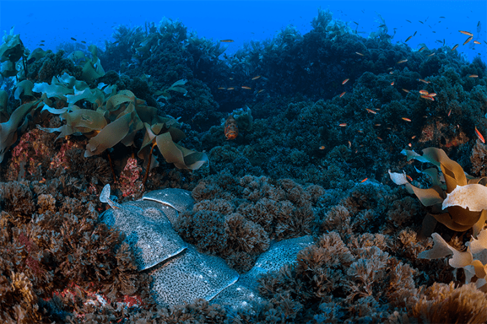

After 30 hours on a stormy sea aboard a Portuguese Navy ship, we finally made it to our destination in the middle of the ocean. Here, 124 miles or so off the coast of Lisbon, lies the tallest mountain in western Europe, only it’s underwater: the Gorringe Seamount. I had traveled there with an international team of scientists who, over a period of weeks, dove from a four-masted sailboat into the deep blue. They had traveled to the seamount to study a thriving ecosystem and catalog the creatures who make their home there.
The summit of Gorringe Seamount is just 100 feet below the ocean’s surface, but its base is more than 16,000 feet deep. It was first mapped in 1875 by Captain Henry Honeychurch Gorringe. With habitats spanning from lush kelp forests to cold-water coral ecosystems and deep-sea sponge beds, the Gorringe Seamount is a biodiversity hotspot, home to species native to both the Atlantic and the Mediterranean. Sea turtles and dolphins navigate the surface waters, and schools of fish shimmer around it like living confetti.

RAY TRAIN:A colony of pregnant torpedo rays, partially hidden in a forest of sea grasses, gathers at Gorringe Seamount. They’re grouped together so snugly that their bulging bodies overlap, one on top of the other. Photo by Jordi Chias.
One afternoon, the divers made a stunning discovery: hundreds of marbled electric rays tucked into the nooks and crannies of the seamount rock. Even more surprising, all of the rays were female and most of them were pregnant, their abdomens swollen with pups, stretching their normally flattened shapes. Unlike most fish, a ray doesn’t lay eggs; instead, she carries her young until they are fully formed. It was the largest concentration of electric rays the scientists had ever encountered, marine scientist and expert diver Joaquim Parrinha told me.
Typically, rays are solitary creatures. They are most often found resting alone on the seabed or hiding in sandy or muddy areas of the ocean floor. They tend to be ambush predators, relying on their electric shock to stun prey like fish or crustaceans. While they may occasionally be found in small groups in areas with abundant food, they do not generally form groups outside of feeding areas. Though rays do tend to establish specific birthing grounds,pregnant moms have not been known to gather there in large numbers.
It was the largest concentration of electric rays the scientists had ever encountered.
As they cast about for explanations for the relative abundance of pregnant rays at the seamount, the scientists noted a troubling absence of sharks, topline predators for rays. Overfishing is likely the culprit, they say. According to deep sea fishing records from the 1970s and 1980s, the area used to be thick with sharks, but today, an estimated 70 percent of tuna catches off the coast of Portugal actually consists of sharks.
“The absence of sharks from the surveys indicates an impacted ecosystem where top predators are systematically removed by industrial fisheries,” says Portuguese marine ecologist Emanuel Gonçalves, chief scientist for the expedition, which was organized by Portugal’s Oceano Azul Foundation. But the abundance of rays is also a hopeful sign, he says, suggesting that fishing methods that affect bottom-dwelling marine life are not operating near the seamount.
It’s still a mystery why so many mature, pregnant rays have gathered at Gorringe. Gonçalves says he and the other scientists are studying their movements and behaviors, collecting observations in the hopes they can crack the code. Understanding the rays’ presence at Gorringe could help them protect both the creatures and the seamount.
“Gorringe is a place worth protecting for current and future generations,” says Gonçalves. “It contains one of the most special underwater environments in the whole North Atlantic and it is just starting to reveal its secrets.” 
Lead image: Jesus Cobaleda / Shutterstock